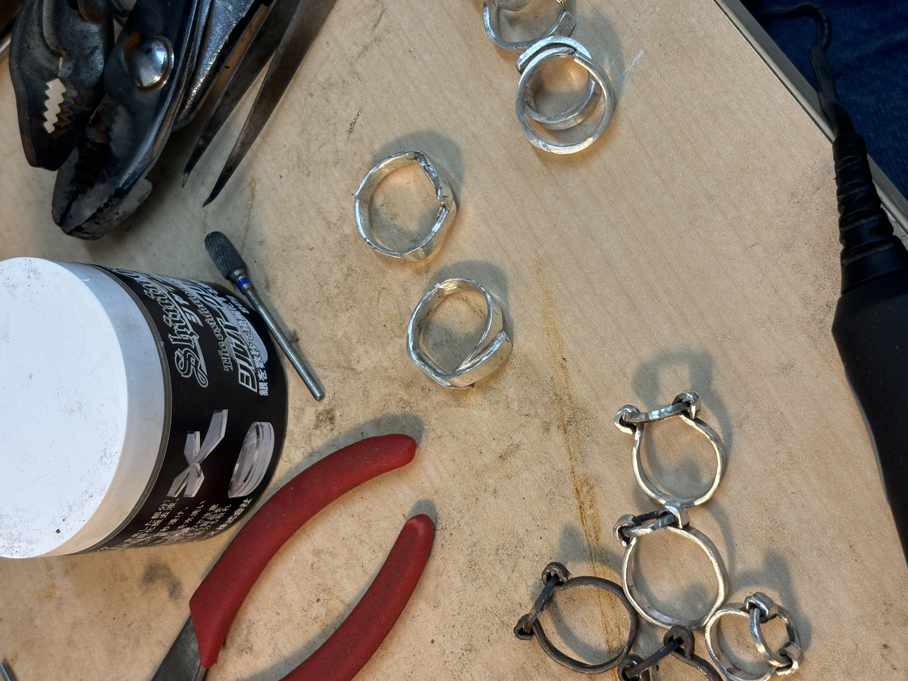
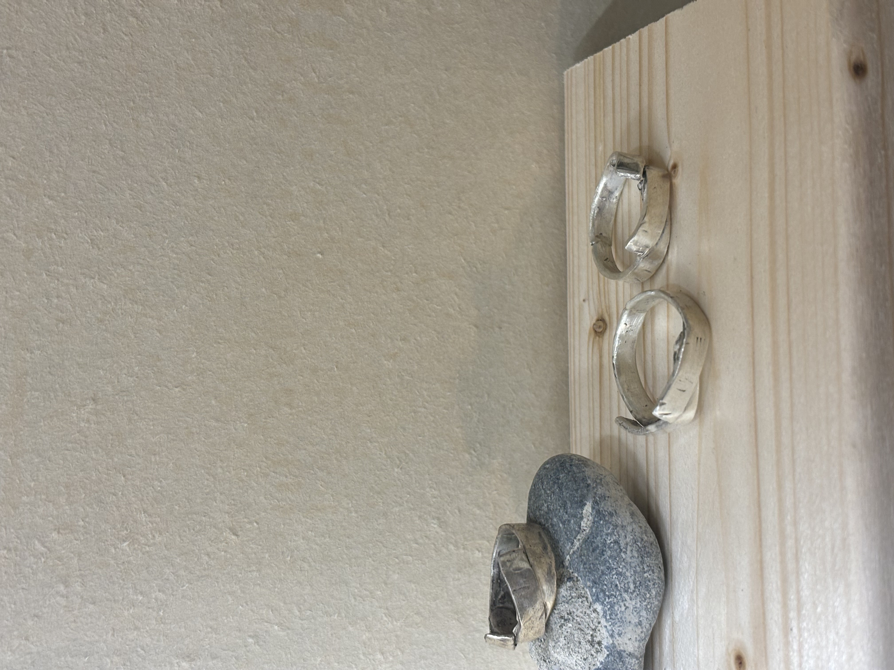
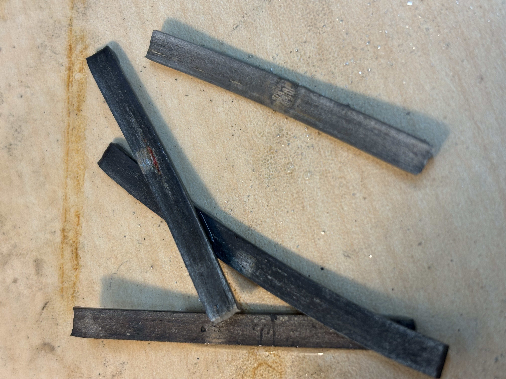
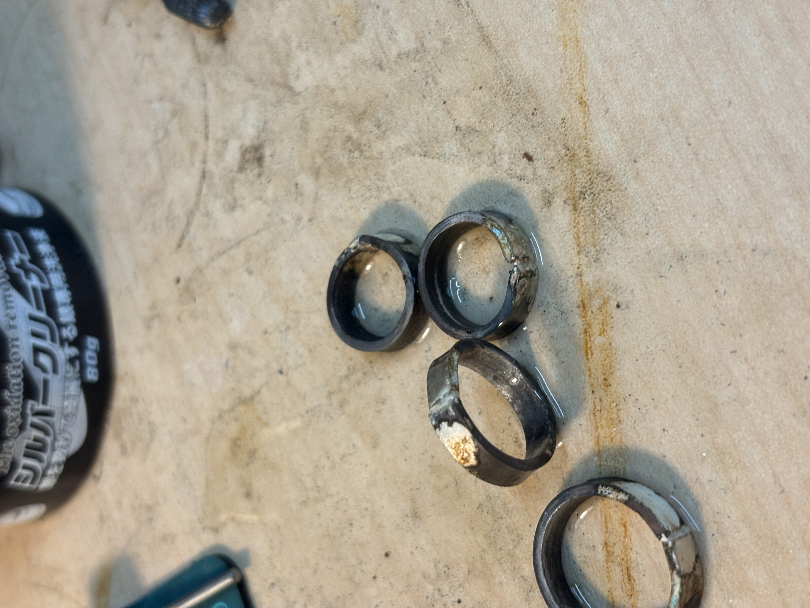
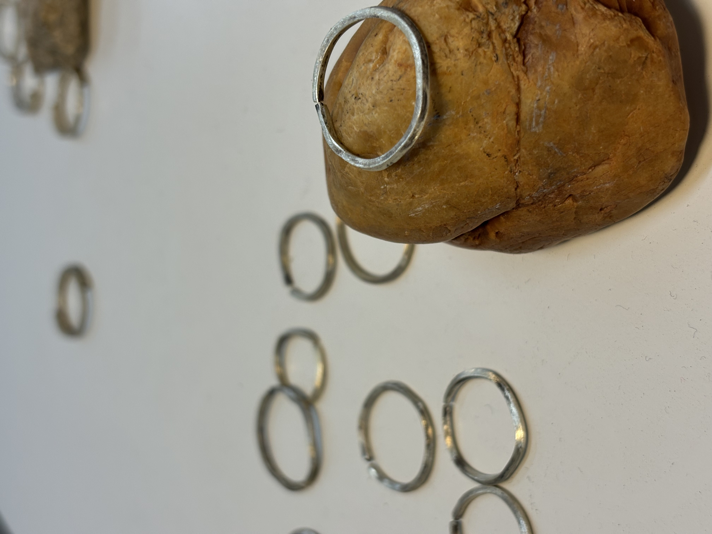

1. 指の周囲を測る

糸や紙を使って指の周囲を巻きつけ、重なる部分にマークをつけます。次に、その長さを定規で測り、日本のリングサイズ表に当てはめます。
ただし、時間帯や気温によって指の太さが変わるので、1日の中で数回測ってみるとより正確です。
2. リングサイズゲージを使う

アクセサリーショップやネットでリングサイズゲージを購入できます。指に合わせて簡単に正確なサイズを知ることができます。
3. リングの内径を測る

既に持っているリングがあれば、その内径を測る方法もあります。内径のサイズがわかれば、それに対応するリングサイズを調べられます。
4. リングの形や幅を考慮

太めのリングやデザイン性のあるリングは、通常のサイズだと少しきつく感じることがあります。そういった場合、ワンサイズ上げるのがおすすめです。
5. ショップで試着する

可能であればショップで実際に試着してみるのが一番確実です。
リングサイズは非常に重要なので、購入前にきちんと測って確認するのがポイントです。
HOME